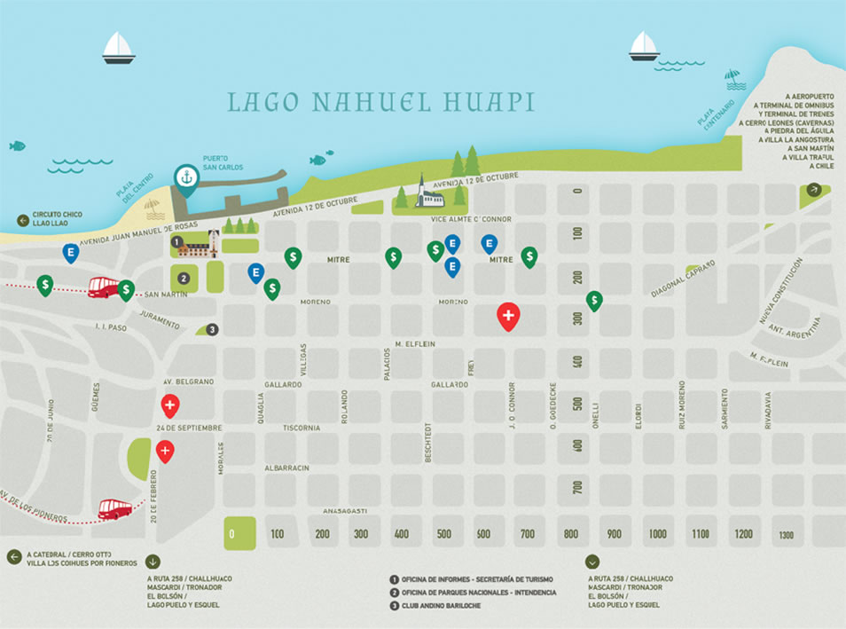
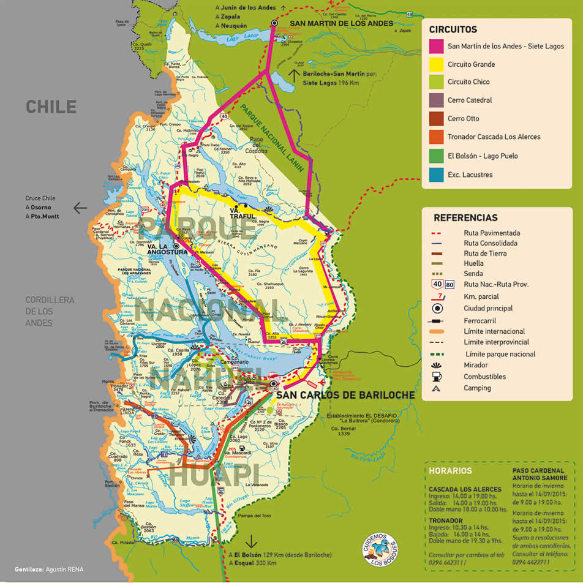
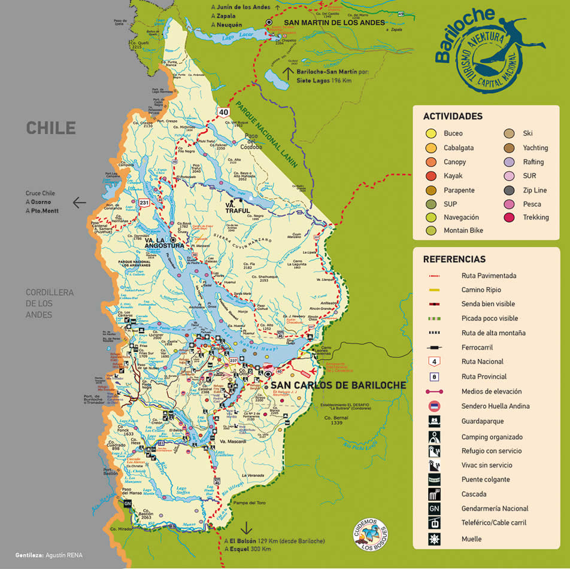
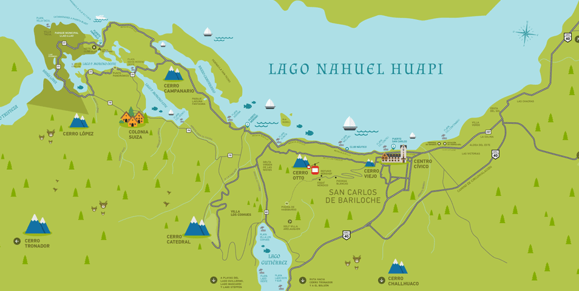

Plano del centro de Bariloche
Bariloche tiene la ventaja de contar con entretenimientos, museos, comercios, restaurantes y puntos de interés que se concentran en el centro. Si recorriéramos esta zona turística a pie, tardaríamos aproximadamente medio día en realizar el trayecto. Sin embargo, mediante la amplia red de transporte público podrás trasladarte de manera cómoda y eficiente hasta cualquier lugar, en muy poco tiempo.

Mapa de circuitos
Recorridos de interés para todo el año, que sugieren circuitos turísticos con múltiples atractivos para dejar atrás la ciudad y acceder a la naturaleza. Una propuesta más que interesante para aquellos que deseen conocer los alrededores de Bariloche admirando paisajes increíbles con innumerables propuestas.

Mapa de Actividades
El turismo aventura te permite vivir la naturaleza, disfrutar de los paisajes y su geografía de una manera especial. Las actividades te permitirán compartir emociones, lugares, experiencias y vivencias, que solo pueden apreciarse en el marco natural y bellísimo que ofrece Bariloche. Las opciones para practicar esta modalidad de turismo son muy variadas. Te invitamos a conocerlas.

Circuito Chico y alrededores
El paseo más tradicional de Bariloche, ideal para quienes quieren conocer los rincones más lindos de nuestra ciudad. En este recorrido se encuentran los más increíbles paisajes, nuestras legendarias fábricas de cerveza, excelentes restaurantes para descubrir una y otra vez la gastronomía de la zona, locales con artesanías de la mejor calidad, hermosos paseos para realizar a pie, playas perfectas para pasar el día, actividades náuticas y acceso a refugios de montaña.
